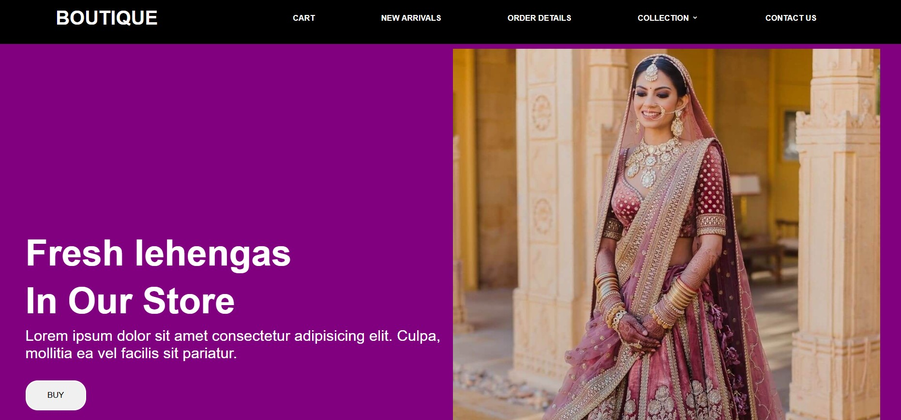

Latest Project
Career Prediction and Guidance System
This Career Prediction System serves as a comprehensive guide for students to understand their strengths, explore career options, and prepare for the future with actionable advice. The chatbot integration adds an interactive layer, ensuring students feel supported throughout their career journey.
ATM Stimulation System
This The ATM Simulation System is a software application that mimics the functionality of a real ATM machine. It provides a secure, interactive, and user-friendly interface for performing various banking operations.

Boutique Front Page
Boutique Front Page